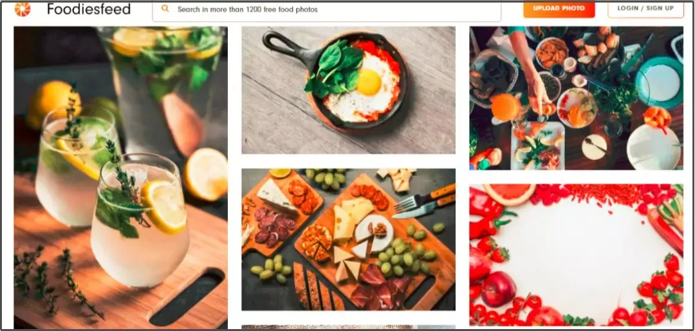

懶人包告訴你必吃的高雄美食，從PTT到在地人推薦口袋美食名單通通告訴你~
從PTT到在地人推薦口袋美食名單通通告訴你~
想吃高雄早午餐、咖啡廳、在地小吃、異國料理和晚餐宵夜都OK

高雄美食｜早餐、早午餐 高雄美食｜美食小吃 高雄美食｜下午茶、咖啡廳 高雄美食｜消夜、宵夜 期末心得
練習用音樂、影片
your drowser does not support the audio element.